A short Introduction¶
What is grakel?¶
GraKeL is a library for the study, use and integration of an upcoming collection of techniques, inside the field of Machine Learning known as graph kernels. These techniques utilize information derived from a conceived structure of the data, in order to apply conventional machine learning techniques for achieving tasks as classification, ranking, etc. Graph Kernels have been widely used in fields such as chemistry, bio-informatics, social networks and malware detection and are starting to be considered as the state-of-the-art solution for various problems inside the field of ML.
What is a Graph Kernel?¶
A graph kernel is a measure of similarity between two graphs, that obeys a certain mathematical constraint, which is that the calculation of each similarity measure between two graphs implies a representation of this two graphs in a hilbert space, where those to graphs are represented as vectors. This can be notated as the following:
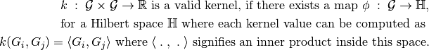
The above definition is satisfied in the literature, by proving that the produced kernel matrix from any collection of graphs 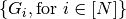, where 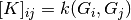, is Positive Semi Definite.
Initializing a graph kernel¶
A very well known graph kernel found in literature is the Shortest Path Kernel first introduced by Karsten M. Borgwardt and Hans-Peter Kriegel on a 2005 article [see [BK05]] titled “Shortest-Path Kernels on Graphs”, really essential as an origin of the Graph Kernel field.
After following the instructions found on Installing grakel, in order to initialize a Shortest Path kernel using the grakel library, you just need to do the following:
>>> from grakel import GraphKernel
>>> sp_kernel = GraphKernel(kernel = {"name": "shortest_path"})
Kernels as the above are considered as base kernels, meaning that they can be computed onto the sets of Graphs needed only a minor parametrization. A second type of kernels appear in the literature which we will call meta-kernels, which apply transformation operations upon graph objects in order to apply kernel calculations on certain steps using a base kernel, aggregating their result in a certain way. A kernel like Weisfeiler-Lehman introduced by Nino Shervashidze at 2011, published on a journal with the title “Weisfeiler Lehman Kernels” [see [SSvL+11]], used a method for approximating a solution to the graph isomorphism problem, in order to generate a graph refinement scheme that would imply bigger expressiveness to the base_kernel calculations (an interesting post explaining the intuition of this kernel).
To initialize such a kernel, using the default subtree kernel, found originally on the paper’s page 9, eq. 2, you can do the following:
>>> from grakel import GraphKernel
>>> wl_kernel = GraphKernel(kernel = [{"name": "weisfeiler_lehman"}, {"name": "subtree_wl"}])
Calculate a kernel¶
Let’s consider a toy example, comparing water 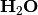 with hydronium 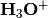, an ion of water produced by protonation.
For start we would calculate the kernel value of water with itself:
>>> H2O = [[[[0, 1, 1], [1, 0, 0], [1, 0, 0]], {0: 'O', 1: 'H', 2: 'H'}]]
>>> sp_kernel.fit_transform(H2O)
12.0
Now to calculate the graph similarity to hydronium based on the shortest path graph kernel
>>> H3O = [[[[0, 1, 1, 1], [1, 0, 0, 0], [1, 0, 0, 0], [1, 0, 0, 0]], {0: 'O', 1: 'H', 2: 'H', 3:'H'}]]
>>> sp_kernel.transform(H3O)
24.0
This result seems like the water molecule is more similar to hydronium, than with itself. This is a false assumption derived from the fact that the kernel calculation is not normalized.
To apply normalization we add such an argument on the GraphKernel method initialization and continue
>>> sp_kernel = GraphKernel(kernel = {"name": "shortest_path"}, normalize=True)
>>> sp_kernel.fit_transform(H2O)
1.0
>>> sp_kernel.transform(H3O)
0.9428090415820634
The input type¶
On the above example concerning water and hydronium, we provided a very strange input object without saying anything about it. The input concerns the user mostly when dealing with an API, so we will examine it in detail although this is a small introduction.
The input of any kernel - either on the stage of fit or of transform - (to learn more about the kernel design see A longer Introduction) is an iterable, where each element contains in following order, the next 3 basic elements:
The first element is a valid graph object. Valid graph objects can be separated in two major categories (both weighted and un-weighted):
- Dictionary representations: This is an edge oriented approach, where the input can have one of the following formats:
- 2-level nested dictionaries from edge symbols to weights.Example:
H2O = {'a': {'b': 1., 'c': 1.}, 'b': {'a': 1}, 'c': {'a': 1.}} - Dictionary of symbols to list of symbols.Example:
H2O = {'a': ['b', 'c'], 'b': ['a'], 'c': ['b']} - Dictionary of tuples to weights.Example:
H2O = {('a', 'b'): 1., ('a', 'c'): 1., ('c', 'a'): 1., ('b', 'a'): 1.} - Iterable of tuples of lenght 2.Example:
H2O = [('a', 'b'), ('a', 'c'), ('b', 'a'), ('c', 'a')] - Iterable of tuples of length 3.Example:
H2O = [('a', 'b', 1.), ('a', 'c', 1.), ('b', 'a', 1.), ('c', 'a', 1.)]
As seen above all the graph objects are considered directed graphs.
Array representations: This is a vertex oriented approach, where the input can have on of the following formats:
- array-like lists of listsExample:
H2O = [[0, 1, 1], [1, 0, 0], [1, 0, 0]] - np.arrayExample:
H2O = numpy.array([[0, 1, 1], [1, 0, 0], [1, 0, 0]]) - sparse matrix (scipy.sparse)Example:
H2O = scipy.sparse.csr_matrix(([1, 1, 1, 1], ([0, 0, 1, 2], [1, 2, 0, 0])), shape=(3, 3))
The second optional element is a graph labeling of vertices (or nodes):
- Dictionary representations: Dictionary between vertex symbols and label symbols.Example:
H2O_labels = {'a': 'O', 'b': 'H', 'c': 'H'} - Array representations: Dictionary between numbers with int keys from 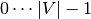 to label symbols.Example:
H2O_labels = {0: 'O', 1: 'H', 2:'H'}
Note
Normally in the literature labels correspond to scalars or single symbols and not to vector-like objects, which are defined as attributes. As far as the input representation is concerned the second object is either labels or attributes for graph vertices and the distinction between attributed kernels or labeled once is specified for each kernel. Here we have made the assumption that never a kernel uses both labels or attributes for vertices and if it does so, a label representation can be applied such that the kernel can use only the one kind of labels.
The third optional element is a graph labeling of edges:
- Dictionary representations: Dictionary between tuples of vertex symbols for all edges and label symbols.Example:
H2O_edge_labels = {('a', 'b'): 'pcb', ('b', 'a'): 'pcb', ('a', 'c'): 'pcb', ('c', 'a'): 'pcb'} - Array representations: Dictionary between numbers tuples of int keys from for all matrix entries considered as edges and label symbols.Example:
H2O_edge_labels = {(0, 1): 'pcb', (1, 0): 'pcb', (0, 2): 'pcb', (2, 0): 'pcb'}
Note
As soon as the same unification of node labels and attributes is valid, a second distinction should be made here. Labels between edges are not weight values. This means that if the user wants to apply such approach to a kernel, that uses weight values in such a way as the Random Walk Kernel, she/he should enrich the graph-type input with weights between all edges that correspond to the edge-labels he/she is intended to use.
As defined above the input should be an iterable of any iterable producing at most one and at least three (or more for certain kernels elements). To signify absence of node labels if the elements produced by each iterable are more than 2 or edge labels if the labels produced are more than 3 the user can provide the empty list or a None Object.
Fitting on a dataset¶
The next important step and final for our short introduction is to see how to apply a kernel on dataset of graphs and labels.
To do so we will utilize the fetch_dataset function found on Dataset loading utilities.
Firstly download the dataset:
>>> from grakel import GraphKernel, datasets
>>> MUTAG = datasets.fetch_dataset("MUTAG", verbose=False)
>>> MUTAG_data = MUTAG.data
Note that the fetch_dataset function returns a sklearn.utils.Bunch object, where
the graph-data can be found in the data class member of the result.
Now let’s initialize a Weisfeiler-Lehman Kernel with 5 iterations:
>>> wl_kernel = GraphKernel(kernel = [{"name": "weisfeiler_lehman", "niter": 5}, {"name": "subtree_wl"}], normalize=True)
Now let’s split the dataset in a train/test manner and calculate fit on the train set.
>>> split_point = int(len(MUTAG_data) * 0.9)
>>> X, Y = MUTAG_data[:split_point], MUTAG_data[split_point:]
>>> wl_kernel = GraphKernel(kernel = [{"name": "weisfeiler_lehman", "niter": 5}, {"name": "subtree_wl"}], normalize=True)
In order to apply classification on a dataset based on the calculation of a kernel matrix, one generally needs the matrix between all the training data. Namely given 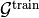 a collection of graphs, calculate the kernel values with a function 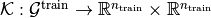, where 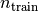 is the number of graphs inside the training set. This function that simply outputs the kernel matrix between all graphs of the graphs of the training set is equivalent with
>>> K_train = wl_kernel.fit_transform(X)
The wl_kernel is now fitted with the train data and we would like given a collection of graphs 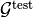
to calculate all the kernel values with a function 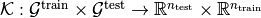 where 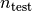 is the number of graphs inside the test set. This function can be calculated as:
>>> K_test = wl_kernel.transform(Y)
which is equivalent to calculating:
>>> K_test = wl_kernel.fit(X).transform(Y)
except the case where the kernel is not deterministic and aside the fact that fitting in the most cases takes the majority of the overall kernel computation time.
Finally to demonstrate a classification task using a standard SVM, with a precomputed kernel (a very well known process in the field’s literature) we first take the targets (which are the class labels) as follows:
>>> y = MUTAG.target
>>> y_train, y_test = y[:split_point], y[split_point:]
import and initialize a sk-learn SVC
>>> from sklearn.svm import SVC
>>> clf = SVC(kernel='precomputed')
classify
>>> clf.fit(K_train, y_train)
SVC(C=1.0, cache_size=200, class_weight=None, coef0=0.0,
decision_function_shape='ovr', degree=3, gamma='auto',
kernel='precomputed', max_iter=-1, probability=False, random_state=None,
shrinking=True, tol=0.001, verbose=False)
>>> y_pred = clf.predict(K_test)
and print the accuracy score
>>> from sklearn.metrics import accuracy_score
>>> print(str(round(accuracy_score(y_test, y_pred)*100, 2)), "%")
78.95 %